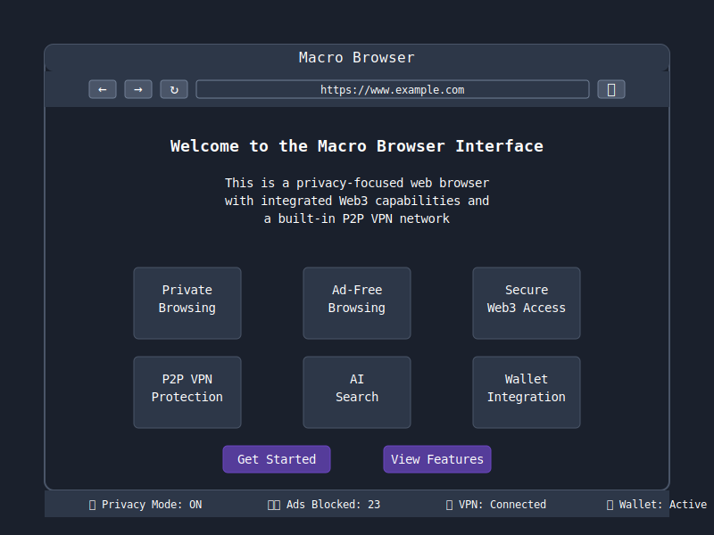
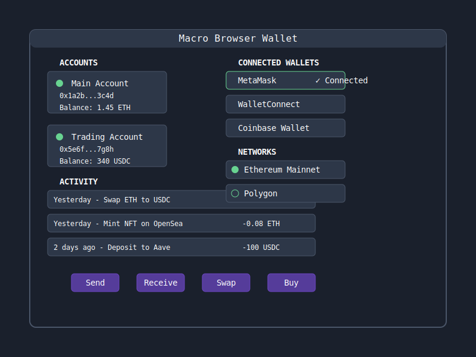

Macro Browser User Interface
This guide introduces the key elements of the Macro Browser user interface and how to navigate through them.
Main Interface
The main browser interface combines familiar browsing controls with Macro's unique privacy and Web3 features:

The interface includes:
- Navigation controls (back, forward, refresh)
- Address/search bar with built-in privacy indicators
- Access to wallet integration
- Privacy status indicators
- Web3 connection status
New Tab Page
The new tab page provides quick access to frequently used Web3 services and privacy statistics:

Features include:
- Privacy-focused search
- Quick links to popular DeFi, NFT, and Web3 services
- Real-time privacy statistics (trackers blocked, time saved)
- Wallet overview showing current balances
Wallet Interface
The integrated wallet interface provides secure access to your crypto assets:

Key wallet features:
- Multiple account management
- Transaction history
- Connected dApp management
- Support for multiple blockchain networks
- Direct integration with popular Web3 services
Settings Panel
The settings panel allows you to customize Macro Browser according to your preferences:
- Privacy settings (ad blocking, anti-fingerprinting, etc.)
- VPN configuration
- Wallet settings
- Theme and appearance
- Advanced browser settings
Status Bar
At the bottom of the browser, the status bar provides at-a-glance information about:
- Current privacy protection status
- Number of trackers/ads blocked on the current page
- VPN connection status
- Wallet connection status
Main Browser Window

The Macro Browser interface follows a clean, minimal design with a dark theme by default. Here are the main components:
Address/Search Bar
Located at the top of the window, this unified bar allows you to:
- Enter website URLs directly
- Search the web using the AI-powered search feature
- View security status of the current site
Navigation Controls
Located to the left of the address bar:
- Back button: Navigate to previous page
- Forward button: Navigate to next page (if available)
- Reload button: Refresh the current page
- Home button: Return to the new tab page
Tab Management
- Tabs are displayed at the top of the browser window
- "+" button creates a new tab
- Each tab shows a favicon and title when available
- Active tab is highlighted
- Tabs can be closed using the "x" button
Web3 Controls
Located to the right of the address bar:
- Wallet connection status indicator
- Quick access to connected wallet(s)
- Transaction approval notifications
Security Controls
Also found in the top right area:
- VPN connection status and toggle
- Ad/tracker blocking statistics
- Privacy mode indicator
Settings
Access settings by clicking the menu button (three dots) in the top-right corner:
- General settings: Language, default search engine, startup behavior
- Privacy settings: VPN configuration, ad blocking rules
- Web3 settings: Wallet management, network connections
- Appearance: Theme selection, font settings
- Advanced: Developer options, network configuration
VPN Controls
The VPN feature can be toggled on/off through:
- The VPN icon in the main toolbar
- The privacy settings menu
- The quick settings dropdown
When active, all browser traffic is routed through the secure P2P network.